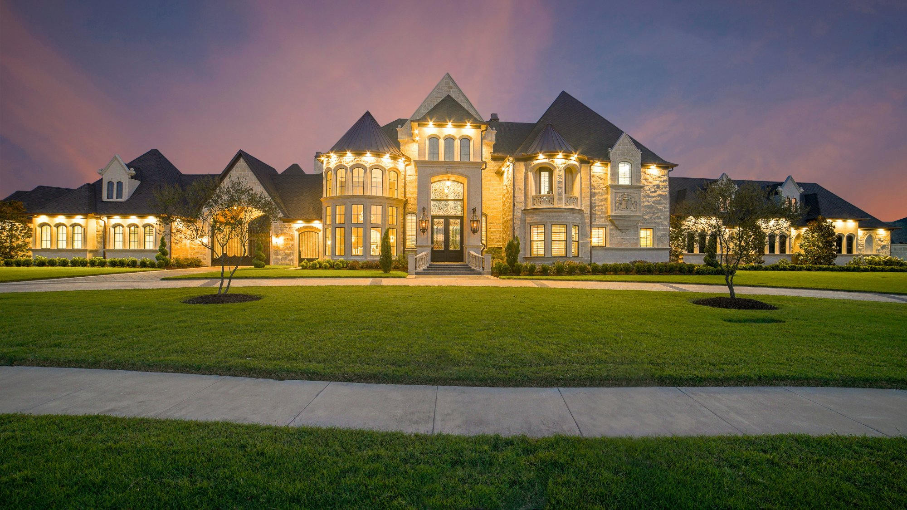

What is a luxury estate concierge service — and do you need one?

Owning a world-class estate is one thing. Improving it — finding the right people, getting the best outcome, not wasting time or money on the wrong contractors — is something else entirely. A luxury estate concierge service exists to make that second part effortless.
This article explains exactly what a luxury estate concierge does, how the model works, and whether it is right for you.
What does a luxury estate concierge do?
A luxury estate concierge acts as a trusted intermediary between you and the specialists you need for high-end home improvement projects. Instead of spending weeks researching contractors, collecting quotes and trying to work out who to trust, you describe your vision to the concierge and they handle everything from that point forward.
This means identifying the best-matched specialists for your specific project — not just anyone who can do the work, but the right people for your budget, aesthetic and timeline. It means briefing those specialists fully on your requirements before they visit your property, so their first visit is substantive rather than exploratory. And it means staying available throughout the project to ensure things stay on track.
The value is not just in finding good contractors. It is in never having to chase one. Your time is the scarcest resource you have — a concierge service returns it to you.
How the model works
The process is straightforward. You contact the concierge with your project in mind — a custom pool, home theater, smart home system, wine cellar, outdoor kitchen or any other estate improvement. The concierge takes the time to understand your vision, your expectations and your timeline.
They then identify the three best-matched specialists for your project from their network of vetted providers. Each specialist is briefed on your requirements before visiting your property. You meet with each of them, compare their approach and proposals, and choose the one you want to work with. The concierge remains involved throughout the project.
In Estate Circle's model, there is no fee to the homeowner. The service is funded by a referral commission paid by the specialist on completed projects — meaning you receive a curated, fully managed experience at no direct cost.

A concierge service brings order and quality to the process of improving a luxury home.
Who is it for?
A luxury estate concierge is most valuable for homeowners who have recently purchased a luxury property and are planning significant improvements. The period immediately after buying a high-value home is typically when the most ambitious projects are conceived — and when the gap between vision and execution is most exposed.
It is equally valuable for busy owners who travel frequently and cannot be hands-on with a project, for international buyers who are new to the local market and do not yet have established relationships with contractors, and for anyone who has had a frustrating experience with a contractor in the past and wants to approach their next project differently.
What projects can a concierge help with?
A luxury estate concierge can assist with any high-end home improvement project. Common examples include custom pools and spas, home theaters and AV systems, smart home and automation installations, wine cellars, outdoor kitchens and entertaining spaces, tennis and pickleball courts, landscape and garden design, interior design, and bespoke furniture and art acquisition.
The concierge model is particularly well suited to complex, high-value projects where the cost of choosing the wrong specialist is significant — and where the homeowner's time is better spent on other things.
What is a luxury estate concierge service?
A luxury estate concierge acts as a trusted intermediary between a homeowner and the specialists needed for high-end home improvement projects. The homeowner describes their vision and the concierge finds vetted specialists, coordinates visits and stays involved throughout.
How does a home improvement concierge work?
The homeowner shares their project with the concierge. The concierge identifies the best-matched specialists, briefs them before any site visit, coordinates the visits, and stays available throughout the project. The model is success-fee based — the concierge earns a referral commission from the specialist on completed projects.
Does a luxury concierge service cost the homeowner anything?
In Estate Circle's model, there is no fee to the homeowner. The service is funded by a referral commission paid by the specialist on completed projects. The homeowner receives a curated, managed experience at no direct cost.
What projects can a luxury estate concierge help with?
Custom pools, home theaters, smart home systems, wine cellars, outdoor kitchens, tennis courts, landscape design, interior design and more. Any high-end home improvement project where finding the right specialist and managing the relationship matters.
A private concierge for luxury estate owners.
Estate Circle connects luxury homeowners with the best vetted specialists for high-end estate projects — custom pools, home theaters, smart home systems, wine cellars, outdoor kitchens and more. We find the right people for your specific project, brief them fully before they visit, and stay involved throughout so you never have to chase a contractor.
Have a project in mind for your estate?
Tell us what you are planning and we will take it from there — finding the right specialists, coordinating everything, and staying involved until the job is done.
Contact UsNo commitment. We'll follow up within 24 hours.